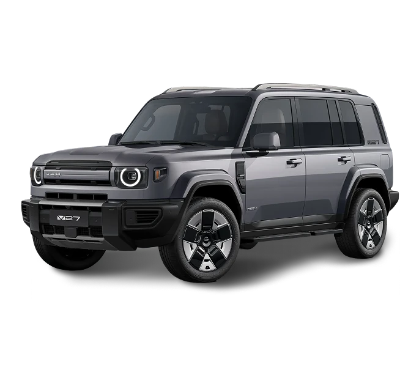

Bold. Capable.
450 km380 hp4.8s 0–100
Starts from
1,490,000 EGP
The Future is REEV
iCAUR Models
Designed for the young and the young-at-heart, iCAUR is about freedom, individuality, and everyday adventures — built for people who refuse to stand still.
Every detail is engineered around the way real life moves — from the cabin to the curves — turning every journey into something more personal, more dynamic, and more memorable.
The result feels effortless, confident, and unmistakably yours: a ride built around you, ready for wherever the road — or the moment — takes you next.
iCAUR Services
Warranty, maintenance and ownership programs, we handle everything so you can focus on the drive.

Factory-trained technicians, genuine parts and clear service intervals — book in minutes, drive out the same day.
Explore Maintenance →
Financing, insurance and trade-in programs built around real life in Egypt — one plan, zero surprises.
Explore Programs →
Comprehensive coverage that protects your vehicle and gives you complete peace of mind — so you can focus on the drive.
Explore Warranty →Why iCAUR
Instant torque and EV performance on every road.
From crowded city streets to open desert highways.
Connected cabin, OTA updates and AI on board.
Bold proportions and details that turn heads.
Media Center
All iCAUR updates, launches and stories in one place — so you always know what we're building, and what's coming next.
View Media Center →

Click the Reserve button, choose your model and tier, provide your details, and submit a refundable deposit. Our team confirms within 24 hours.
With fast charging, 20% to 80% in ~45 minutes. A full overnight home charge takes 6–8 hours — wake up to a full battery every day.
Start online or visit a showroom. Advisors guide you through model selection, configuration, and all financing options.
Yes — test drives are available at all iCAUR experience centers. Book online or call our team for a convenient time.
Every iCAUR includes a 5-year/150,000km vehicle warranty, 8-year battery warranty, and 3 years of complimentary scheduled maintenance.
Your next car is waiting — let's get you behind the wheel and show you what electric really means.